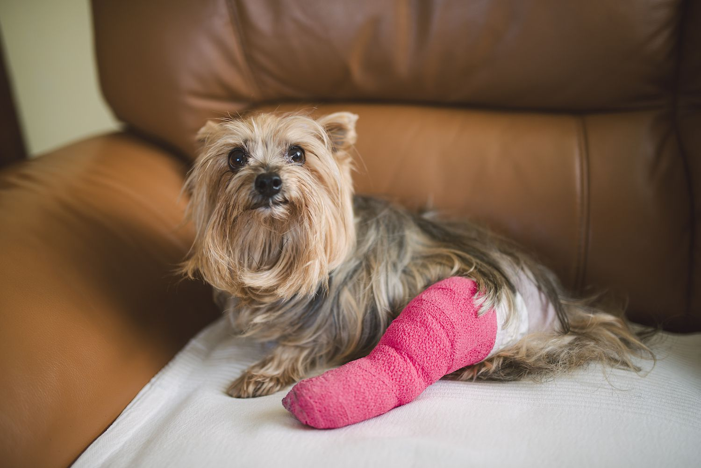

Animals in Shelter
adopt and donate for the little paws

Ralphie, 2 years
Hello i'm a 2 year old Shih Tzu dog, i was left alone side of the street and accidently broke my leg in order to cross the street
Maggy, 1 year
Hello i'm a 1 year old Domestic cat, i was left alone side of the street and accidently broke my leg in order to cross the street

Mr.Noodle, 1.4 years
Hello i'm a 1.4 year old Siamese cat, i was left alone side of the street and accidently broke my leg in order to cross the street